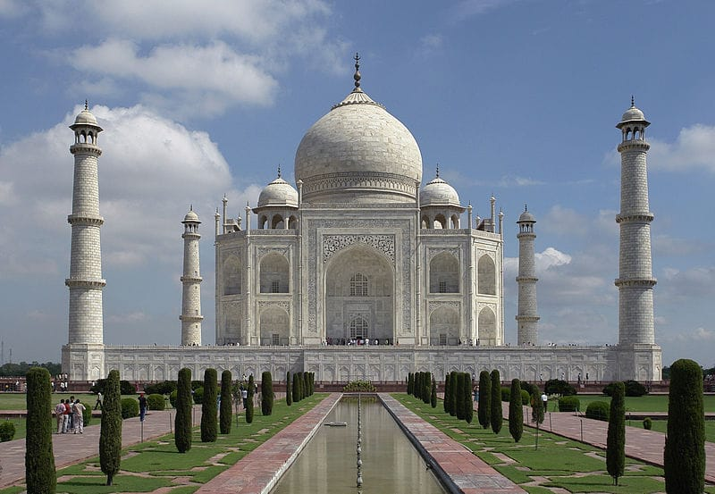

তাজমহল
Last Updated: Jun 17, 2023
তাজমহল নিয়ে মুগ্ধতার সর্বোচ্চ প্রকাশ ঘটেছে এক নারীর কথায়। প্রেমিকের সাথে তাজমহলে বেড়াতে গিয়ে তাজমহলের অপার সৌন্দর্য্য দেখে নারী নাকি তার প্রেমিককে বলেছিলেন, "আমি মারা গেলে তুমি যদি এমন একটা তাজমহল বানাতে পারতে তাহলে আমি এখনই মারা যেতাম।" তাজমহল নির্মাণের পেছনে যে অনেক নিষ্ঠুরতাও ছিল নিশ্চয়ই বেচারির তা জানা ছিল না। তাই এমন অদ্ভুত পূর্ব শৈল্পিক সৌন্দর্যময় এক স্থাপনা দেখেই তার মন আচ্ছন্ন হয়ে পড়েছিল। কিন্তু পিছনের সেই ইতিহাস ভুলে যাওয়ার নয়। স্ত্রী মমতাজ মহলের অকাল মৃত্যুতে মুঘল সম্রাট শাহজাহানের দিলে খুব আঘাত লাগে। সে ভেঙে পড়া দিল নিয়ে তিনি তার স্ত্রীর কবরের উপর একটা সমাধিসৌধ নির্মাণ করেন। এটাই তাজমহল। ১৪ বছরের ইরানি কিশোরী মমতাজের দৈহিক সৌন্দর্য্য শাহজাহানকে বিমোহিত করে ফেলেছিল। তাই তিনি এই কিশোরীর সাথে বাগদান সম্পন্ন করেন, কিন্তু তাকে বিয়ে করে ঘরে তুলে নেননি। বরং মমতাজকে ঝুলিয়ে রেখে শাহজাহান আরেক নারীকে বিয়ে করেন। বাগদানের ৫ বছর পর ১৬১২ সালের মমতাজকে দ্বিতীয় স্ত্রী হিসেবে প্রাসাদে নিয়ে আসেন শাহজাহান। আবার ১৬১৭ সালে তিনি আরো এক নারীকে বিয়ে করেন মমতাজ সহ দুই স্ত্রী ঘরে থাকা সত্ত্বেও। এদিকে বিয়ের ১৯ বছরের মধ্যে মমতাজ শাহজানের ১৪ সন্তানের মা হন। ১৪ তম সন্তান এর জন্ম দিতে গিয়ে মমতাজ মারা যান, মাত্র ৩৮ বছর বয়সে। বলা যায়, শাহজাহান নিজে মমতাজের মৃত্যুকে ডেকে এনেছিলেন, বধহীনের মতো এক সিদ্ধান্ত গ্রহণ করেন। গর্ভবতী মমতাজকে সঙ্গে নিয়ে তিনি যুদ্ধযাত্রা করেন। দুর্গম রাস্তা দিয়ে হাতির পিঠে বসে দীর্ঘক্ষণ চলার দরুন সময়ের আগে মমতাজের প্রসব বেদনা শুরু হয়। দীর্ঘ ৩০ ঘন্টার সেই প্রসবব্যথা শেষে সন্তান জন্ম দিয়ে মৃত্যুর কোলে ঢলে পড়েন মমতাজ, অতিরিক্ত রক্তক্ষরণের ফলে। তাজমহলের নির্মাম কাজ শুরু হয় ১৬৩২ সালে এবং পুরোপুরি শেষ হয় ১৬৫৩ সালে। এ সময়কালে ২০,০০০ শ্রমিক ও কারিগর তাজমহল নির্মাণে দাসদের মতো ব্যবহৃত হয়েছিল। কথিত আছে, তাজমহল নির্মাণ শেষে কারিগরদের হাতের আঙ্গুল কেটে দেয়া হয় যাতে তারা অন্য কোথাও আবার এই কাজ করতে না পারে, যদিও এই গল্পে সত্যতা প্রমাণিত নয়। শাহাজান তাজমহল নির্মাণে তখনকার সময়ের ৩২ মিলিয়ন রুপি খরচ করেছেন। তাত্ত্বিক হিসাব অনুযায়ী, এ পরিমাণ অর্থ বর্তমানের ৫২.৮ বিলিয়ন রুপি বা ৮২৭ মিলিয়ন ইউএস ডলারের সমান, অর্থাৎ ৬,৪৩৮ কোটি টাকার সমান। তবে এটা আসলে আরো বেশি হবে। তাজমহল নির্মাণের ১১ বছর পর শায়েস্তা খাঁ সুবেদার হয়ে বাংলার আসেন। শায়েস্তা খাঁর আমলে টাকায় কত মন চাল পাওয়া যেত? ৮ মন। অর্থাৎ তখন এক মন চালের দাম ছিল সাড়ে বারো পয়সা বা .১২৫ টাকা। আর বর্তমানে ১ মন চালের সর্বনিম্ন মূল্য কত? সম্ভবত: ৯০০ থেকে ১০০০ টাকার মধ্যে হবে। ধরে নিলাম ৯০০ টাকা। এখন ৯০০ কি .১২৫ দিয়ে ভাগ করলে ভাগফল হবে, ৭,২০০। এর মানে তখনকার চেয়ে এখন কার দাম বেড়েছে ৭,২০০ গুন বেশি। তাহলে তাজমহলের জন্য ব্যয়কৃত অর্থের পরিমাণ বর্তমানে দাঁড়াবে ৩২ মিলিয়ন * ৭২০০ রুপি বা ২৩,০৪০ কোটি রুপি রুপিতে যা ২৮,৩১৪ কোটি টাকার সমান। এই পুরো টাকাটাই ছিল সাধারণ মানুষের রক্তে চুষে আদায় করা খাজনা। শাহজাহান এ টাকাই ব্যয় করেছেন নিজের মৃত স্ত্রীর কবরের উপর স্মৃতিসৌধ নির্মাণের মত ব্যক্তিগত অভিলাষ পূরণে। কোন সত্যিকারের প্রেমিকের মন কি কখনো এমন একটা জঘন্য অন্যায় করতে চাইবে? অনু্ৎপাদনশীল খাতে এ বিশাল পরিমাণ অর্থ খরচ করা আর সেই অর্থ আদায় করতে গিয়ে জনগণের উপর চালানো অত্যাচার কুফল হিসেবে তাজমহল নির্মাণের কিছুদিনের মধ্যে ভয়াবহ দুর্ভিক্ষ দেখা দেয়। রাস্তার পড়ে থাকে মৃতদেহগুলির খোলা চোখ তখন তাজমহলের সাদা মার্বেলগুলিকে দেখে নি। মুঘল পরিবারের মেয়েদেরকে বিয়ে করতে দেয়া হতো না। সম্রাট শাহজাহান নিজের মেয়ে জাহানারার প্রেমকে জঘন্য উপায়ে কবর দিয়েছিলেন। জাহানার যার প্রেমে পড়েছিলেন শাহজাহান তাকে একেবারেই পছন্দ করেন নি। কিন্তু বিদূষী জাহানারা প্রেমে অটল ছিলেন। তার প্রেমিক লুকিয়ে তার সাথে দেখা করতে আসতো। শাহজাহান একদিন মেয়ের প্রেমিককে আটক করতে সক্ষম হন। তারপর মেয়ের চোখের সামনে মেয়ের সেই প্রেমিককে তক্তা দিয়ে দেয়ালের সাথে আটকে পেরেক গেঁথে গেঁথে খুন করেন 'প্রেমের' তাজমহলের নির্মাতা শাহজাহান। যমুনার তীরে যখন তাজমহল নির্মাণ কাজ চলেছিল। তাজমহল নির্মাণের পাঁচ বছরের মাথায় শাহজাহান তাঁর পুত্র আওরঙ্গজেবের কাছে সিংহাসন হারান। আওরঙ্গজেব শাহজাহানকে জোর করে বন্দী করে নিজের সম্রাট ঘোষণা করেন, একে একে দুনিয়া থেকে সরিয়ে দেন ক্ষমতার দাবিদার নিজের অন্য ভাইদের। শাহজাহানকে তার শেষের ৮ বছর আগ্রায় দুর্গে গৃহবন্দী হয়ে থেকেই কাটাতে হয়, নিরবে দেখে যেতে হয় ক্ষমতার দখল নিয়ে পুত্রদের কারাকাড়ি। নিজে কিভাবে নিজের ভাইদের খুন করে ক্ষমতা দখল করেছিলেন সেটা নিশ্চয়ই তখন তাঁর মনে পড়ছিল। বন্দি অবস্থায় তিনি মারা যান। বন্দি জীবনে কে ছিল শাহাজানের সঙ্গি? সেই জাহানারা যার প্রেমিককে শাহজাহান নৃশংসভাবে খুন করেছিলেন। জাহানারা স্বেচ্ছায় পিতার সাথে বন্দী হয় দুঃসময়ে পিতাকে সঙ্গ দিয়ে গেছেন। তাহলে প্রেমিক হিসেবে কে মহান? শাহজাহানকে কি আদৌ প্রেমিক বলা যায়? মমতাজের প্রতি তার যে অনুভূতি ছিল সেটাকে স্রেফ মোহ ছাড়া আর কিছু বলার উপায় নেই।
আশা করি অবশ্যই আপনারা আপনাদের মূল্যবান মতামত দিবেন।